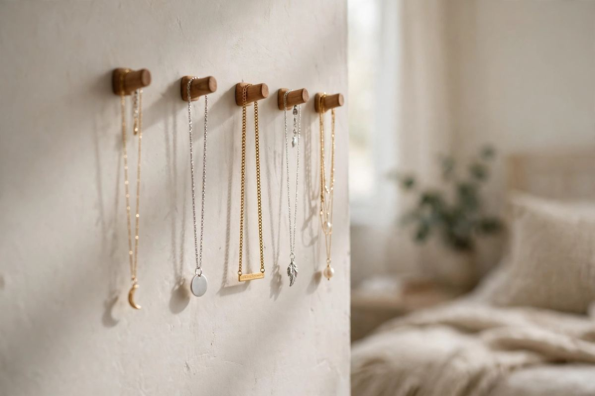
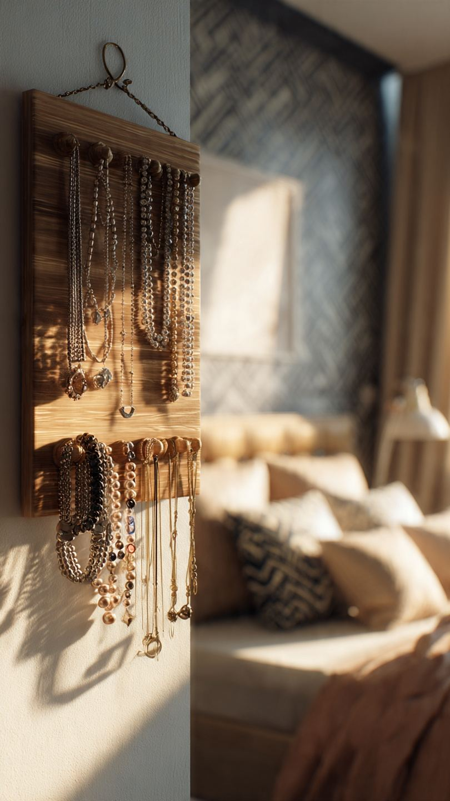
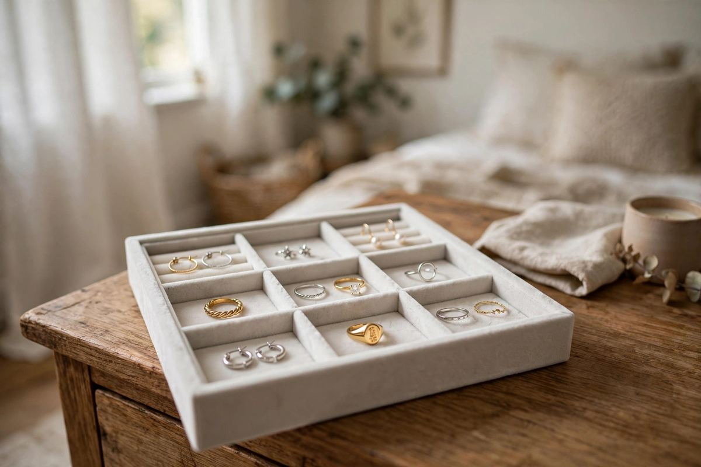
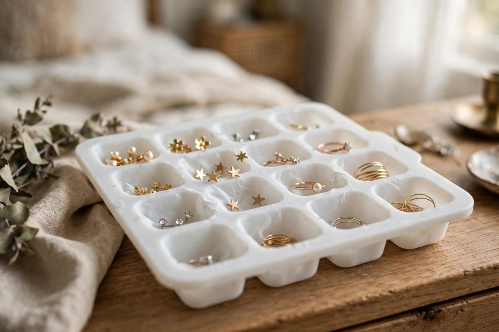

No-Drill Jewelry Organization
Jewelry organization ideas
for spaces with no vanity.
You're running late, and somehow finding one matching earring turns into untangling three necklaces, digging through a drawer of mismatched studs, and giving up to just wear the same bracelet you always wear.
Jewelry is small, which makes it easy to assume it doesn't need much of a system — but that's exactly why it ends up everywhere. With the right setup, even a tiny apartment can have every piece visible, untangled, and easy to grab in seconds.

Why jewelry gets disorganized so easily
Unlike clothes or kitchen items, jewelry doesn't naturally sort itself by size or category.
Nothing keeps pieces apart
A tiny stud earring and a long pendant necklace end up in the same drawer or dish with nothing keeping them apart. Chains tangle against each other, earrings separate and go missing, and anything without a dedicated spot tends to just get tossed wherever's closest.
No dedicated spot in a small apartment
There's often no vanity or dedicated jewelry armoire, so jewelry competes for space with everything else on a dresser or in a closet. The fix is the same principle that works for any small space: give every category its own defined spot, and use vertical or wall space instead of flat surfaces alone.
Start with a full clear-out
Before buying or setting up any organizer, gather every piece of jewelry you own in one place.
-
Gather from everywhere
Pull jewelry from every drawer, dish, bag, and pocket you can think of — it's often scattered in more places than you'd expect.
-
Sort honestly
Sort into keep, donate, and toss piles. Be honest about broken pieces, single earrings with no match, or items you haven't worn in years.
-
Untangle while you're at it
Untangle any knotted necklaces now, while you're already going through everything piece by piece.
-
Group by category
Group your "keep" pile by category before deciding on storage — this makes the next steps far more efficient.
Organize by category
Good jewelry organization for small spaces means separating pieces by type, so nothing tangles and everything stays visible.
Necklaces
Hanging storage is almost always better than a drawer for necklaces, since it keeps chains separated and prevents tangling. A wall-mounted hook rack, a hanging organizer, or even a small corkboard with hooks lets you see every necklace at a glance.

Earrings
Earrings are the easiest category to lose track of, especially studs. A small tray with dividers, a pin cushion-style holder, or a hanging organizer with mesh pockets keeps pairs together and visible instead of rolling around loose in a dish.
Rings
Rings do well in a small dish or a tray with shallow compartments, kept somewhere consistent like a nightstand or dresser top. Because rings are easy to set down absentmindedly, having one obvious "landing spot" cuts down on lost rings significantly.
Bracelets
Bracelets are bulkier than other jewelry, so they benefit from either a small vertical rod or stand they can slide onto, or a dedicated compartment in a drawer organizer where they won't get tangled with necklaces.
Statement and occasion pieces
Larger or rarely worn pieces — statement necklaces, formal jewelry — can be stored separately from your everyday rotation, ideally in a small box or pouch, since digging through special-occasion pieces every day just slows you down.
Step-by-step tips for maximizing jewelry storage
A few consistent habits do more for a jewelry collection than any single product.


-
Use wall space instead of flat surfaces
A hanging organizer or hook rack takes up zero counter or drawer space and keeps jewelry visible at a glance.
-
Separate by category, then by frequency
Keep daily-wear pieces in the most accessible spot, and reserve drawers or boxes for occasional pieces.
-
Use trays with dividers for small pieces
Earrings and rings especially benefit from small, separated compartments rather than one open dish.
-
Store necklaces individually
Even a simple row of hooks keeps chains from tangling into each other overnight, instead of piling them together.
-
Repurpose containers you already own
Ice cube trays, small mason jars, or egg cartons can double as jewelry dividers in a pinch — no need to buy anything special.
-
Keep daily pieces closest to where you get ready
The jewelry you reach for daily should take zero extra steps to access.
Renter-friendly jewelry storage solutions
Since most jewelry organizers rely on wall space, renter-friendly storage principles apply directly here — you can build an entire hanging system without a single hole in the wall.
No-drill hooks
Adhesive no-drill hooks are ideal for hanging necklaces individually, mounting a small hanging organizer, or hanging a jewelry pouch inside a closet door. They hold well for lightweight jewelry and remove cleanly at move-out.
Over-the-door and closet organizers
A hanging jewelry organizer that drapes over a closet door or hangs from a no-drill hook adds an entire dedicated storage system without touching the walls — useful for entryway storage areas or bedroom closets alike.
Freestanding trays and stands
Freestanding jewelry trays, dishes, and small stands require no installation at all and can be rearranged or moved freely as your space or needs change.
Tension rod hacks
A small tension rod mounted inside a drawer or on a shelf can double as a necklace rack — hang pieces directly over the rod to keep them separated and tangle-free without any hardware.
Small coat closet or entryway jewelry storage
If your bedroom doesn't have much extra space, consider adding a small jewelry storage element to your entryway.
Grab-and-go pieces near the door
Especially useful for everyday pieces like a watch or simple studs you put on right before heading out the door. A small no-drill hook or a slim hanging organizer on the inside of the closet door keeps these grab-and-go pieces separate from your main jewelry collection, so you're not backtracking to the bedroom on your way out.
Keeping jewelry organized long-term
A jewelry system only works if it's easy to maintain daily.
- Put jewelry back in its designated spot the moment you take it off, rather than setting it down "for now" on the nearest surface.
- Do a quick check every few months for tangled necklaces or earrings that have lost their match.
- Periodically reassess which pieces have moved from "everyday" to "special occasion" (or vice versa) and relocate them to the right storage spot.
FAQ: Jewelry organization for small spaces
What's the best way to store jewelry without a dresser or vanity?
A wall-mounted hanging organizer using no-drill hooks works well, since it takes up zero surface space and keeps every piece visible at a glance.
How do I stop my necklaces from tangling?
Store them individually on hooks rather than piled together in a drawer or dish. Even a simple row of adhesive hooks prevents chains from tangling overnight.
Can I organize jewelry without drilling into the walls?
Yes. No-drill adhesive hooks, over-the-door organizers, freestanding trays, and tension rod hacks all provide full jewelry storage systems without any permanent installation.
Where should I keep jewelry I wear every day versus occasionally?
Keep daily pieces in the most accessible spot, like a small tray by where you get ready or a hook near the door. Store occasional or statement pieces separately in a box or pouch so they don't clutter your everyday routine.
Jewelry doesn't need a dedicated vanity or a large dresser to stay organized — it just needs a system that matches how small and easy to misplace each piece is. Sort by category, use wall space instead of flat surfaces, and lean on renter-friendly tools like no-drill hooks and tension rods to keep every necklace, earring, and ring exactly where you can find it.